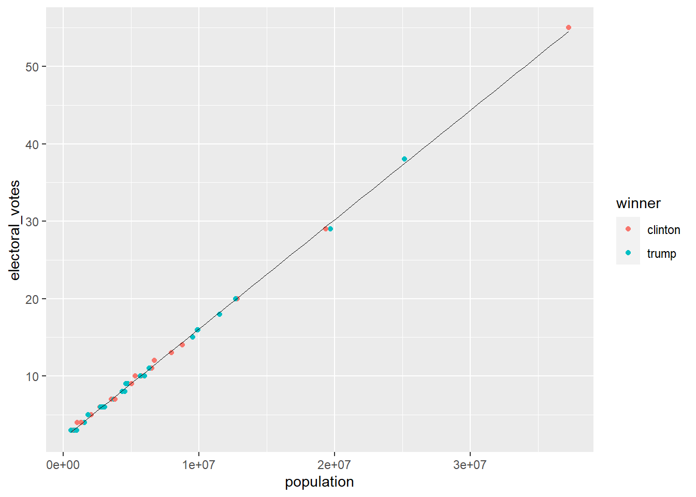
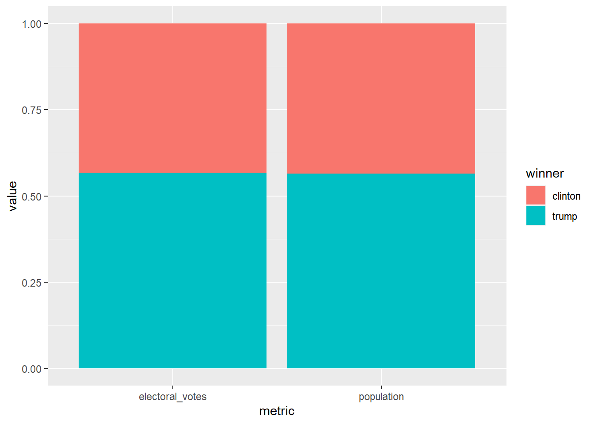
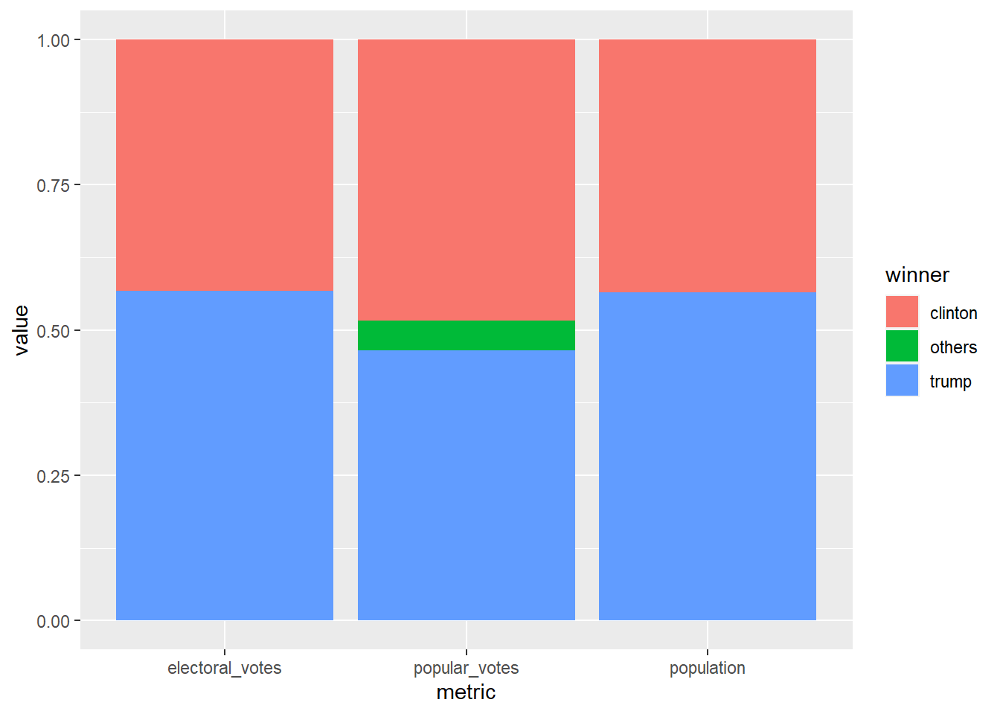
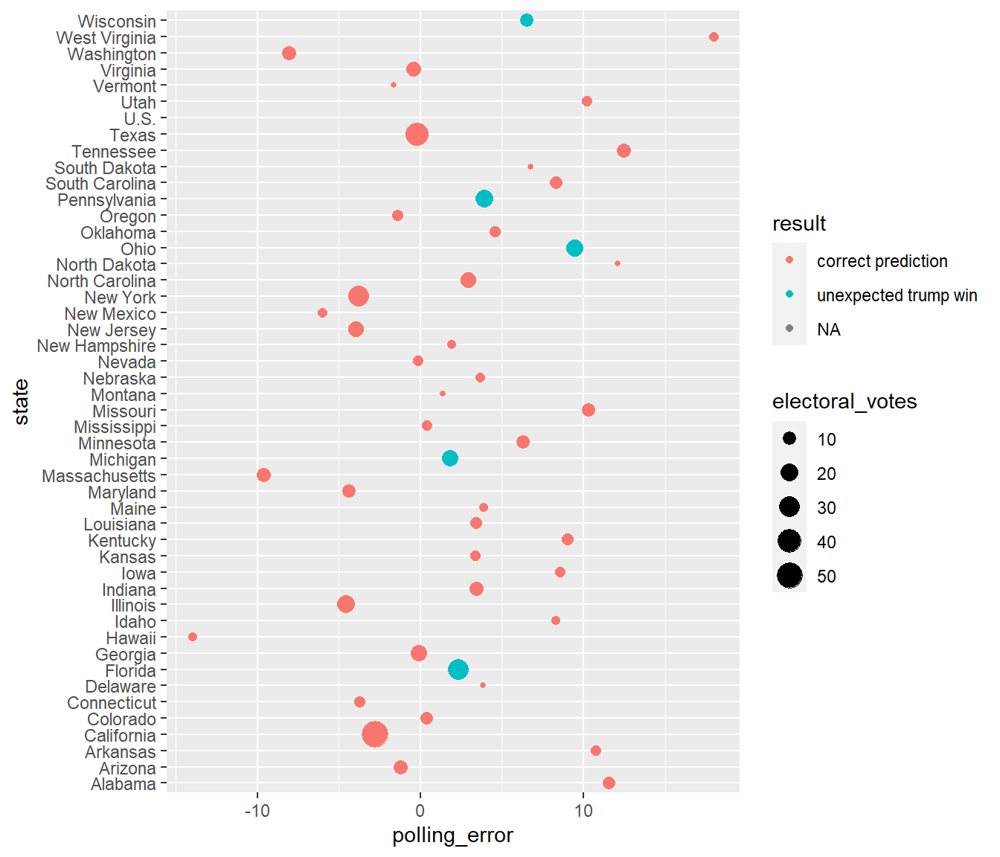

Assignment 7: Relational data plus revisiting data wrangling and visualization ================
This homework is due by 10pm on Thursday 03/17/20. Please upload it using your personal GitHub repository for this class.
Please name your R markdown file assignment_7.Rmd and the knitted markdown file assignment_7.md.
For this assignment, please reproduce this markdown file using R markdown. This includes the followings:
Reproduce this markdown template, except for this list of instructions which you don’t have to include. Pay attention to all the formating in this file, including bullet points, bolded characters, inserted code chunks, headings, text colors, blank lines, etc.
Have all your code embedded within the R markdown file, and show BOTH your code and plots in the knitted markdown file.
Use R Markdown functionalities to hide messages and warnings when needed. (Suggestion: messages and warnings can often be informative and important, so please examine them carefully and only turn them off when you finish the exercise).
To start, first load all the required packages with the following code. Install them if they are not installed yet.
library(tidyverse)
library(knitr)
library(dslabs)For this exercise, we will explore the result of the 2016 US presidential election as well as the polling data. We will use the following three datasets in the dslabs package, and use join function to connect them together. As a reminder, you can use ? to learn more about these datasets.
results_us_election_2016: Election results (popular vote) and electoral college votes from the 2016 presidential election.
polls_us_election_2016: Poll results from the 2016 presidential elections.
murders: Gun murder data from FBI reports. It also contains the population of each state.
We will also use this dataset to get the exact numbers of votes for question 3.
1a. Use a join function to combine the murders dataset, which contains information on population size, and the results_us_election_2016 dataset, which contains information on the number of electoral votes. Name this new dataset q_1a, and show its first 6 rows.
| state | abb | region | population | total | electoral_votes | clinton | trump | others |
|---|---|---|---|---|---|---|---|---|
| Alabama | AL | South | 4779736 | 135 | 9 | 34.4 | 62.1 | 3.6 |
| Alaska | AK | West | 710231 | 19 | 3 | 36.6 | 51.3 | 12.2 |
| Arizona | AZ | West | 6392017 | 232 | 11 | 45.1 | 48.7 | 6.2 |
| Arkansas | AR | South | 2915918 | 93 | 6 | 33.7 | 60.6 | 5.8 |
| California | CA | West | 37253956 | 1257 | 55 | 61.7 | 31.6 | 6.7 |
| Colorado | CO | West | 5029196 | 65 | 9 | 48.2 | 43.3 | 8.6 |
q_1a <-
murders %>%
inner_join(results_us_election_2016, by = c(state="state"))
kable(head(q_1a, n = 6))| state | abb | region | population | total | electoral_votes | clinton | trump | others |
|---|---|---|---|---|---|---|---|---|
| Alabama | AL | South | 4779736 | 135 | 9 | 34.4 | 62.1 | 3.6 |
| Alaska | AK | West | 710231 | 19 | 3 | 36.6 | 51.3 | 12.2 |
| Arizona | AZ | West | 6392017 | 232 | 11 | 45.1 | 48.7 | 6.2 |
| Arkansas | AR | South | 2915918 | 93 | 6 | 33.7 | 60.6 | 5.8 |
| California | CA | West | 37253956 | 1257 | 55 | 61.7 | 31.6 | 6.7 |
| Colorado | CO | West | 5029196 | 65 | 9 | 48.2 | 43.3 | 8.6 |
1b. Add a new variable in the q_1a dataset to indicate which candidate won in each state, and remove the columns abb, region, and total. Name this new dataset q_1b, and show its first 6 rows.
| state | population | electoral_votes | clinton | trump | others | winner |
|---|---|---|---|---|---|---|
| Alabama | 4779736 | 9 | 34.4 | 62.1 | 3.6 | trump |
| Alaska | 710231 | 3 | 36.6 | 51.3 | 12.2 | trump |
| Arizona | 6392017 | 11 | 45.1 | 48.7 | 6.2 | trump |
| Arkansas | 2915918 | 6 | 33.7 | 60.6 | 5.8 | trump |
| California | 37253956 | 55 | 61.7 | 31.6 | 6.7 | clinton |
| Colorado | 5029196 | 9 | 48.2 | 43.3 | 8.6 | clinton |
q_1b <- q_1a %>%
mutate(winner = if_else(trump > clinton, "trump", "clinton"))%>%
select(-c(abb, region, total))
kable(head(q_1b, n = 6))| state | population | electoral_votes | clinton | trump | others | winner |
|---|---|---|---|---|---|---|
| Alabama | 4779736 | 9 | 34.4 | 62.1 | 3.6 | trump |
| Alaska | 710231 | 3 | 36.6 | 51.3 | 12.2 | trump |
| Arizona | 6392017 | 11 | 45.1 | 48.7 | 6.2 | trump |
| Arkansas | 2915918 | 6 | 33.7 | 60.6 | 5.8 | trump |
| California | 37253956 | 55 | 61.7 | 31.6 | 6.7 | clinton |
| Colorado | 5029196 | 9 | 48.2 | 43.3 | 8.6 | clinton |
1c. Using the q_1b dataset, plot the relationship between population size and number of electoral votes. Use color to indicate who won the state. Fit a straight line to the data, set its color to black, size to 0.1, and turn off its confidence interval.
q_1b %>%
ggplot(aes(x=population, y=electoral_votes)) +
geom_point(aes(color=winner))+
stat_smooth(method="lm", se=FALSE,color="black",size=0.1)## `geom_smooth()` using formula 'y ~ x'
2a. First, convert the q_1b dataset to longer format such that the population and electoral_votes columns are turned into rows as shown below. Name this new dataset q_2a, and show its first 6 rows.
| state | clinton | trump | others | winner | metric | value |
|---|---|---|---|---|---|---|
| Alabama | 34.4 | 62.1 | 3.6 | trump | population | 4779736 |
| Alabama | 34.4 | 62.1 | 3.6 | trump | electoral_votes | 9 |
| Alaska | 36.6 | 51.3 | 12.2 | trump | population | 710231 |
| Alaska | 36.6 | 51.3 | 12.2 | trump | electoral_votes | 3 |
| Arizona | 45.1 | 48.7 | 6.2 | trump | population | 6392017 |
| Arizona | 45.1 | 48.7 | 6.2 | trump | electoral_votes | 11 |
q_2a <- q_1b %>%
pivot_longer(c(2:3), names_to = "metric", values_to = "value")
kable(head(q_2a, n = 6))| state | clinton | trump | others | winner | metric | value |
|---|---|---|---|---|---|---|
| Alabama | 34.4 | 62.1 | 3.6 | trump | population | 4779736 |
| Alabama | 34.4 | 62.1 | 3.6 | trump | electoral_votes | 9 |
| Alaska | 36.6 | 51.3 | 12.2 | trump | population | 710231 |
| Alaska | 36.6 | 51.3 | 12.2 | trump | electoral_votes | 3 |
| Arizona | 45.1 | 48.7 | 6.2 | trump | population | 6392017 |
| Arizona | 45.1 | 48.7 | 6.2 | trump | electoral_votes | 11 |
2b. Then, sum up the number of electoral votes and population size across all states for each candidate. Name this new dataset q_2b, and print it as shown below.
| metric | winner | value |
|---|---|---|
| electoral_votes | clinton | 233 |
| electoral_votes | trump | 305 |
| population | clinton | 134982448 |
| population | trump | 174881780 |
q_2b <- q_2a %>%
group_by(metric, winner)%>%
summarise(value = sum(value))## `summarise()` has grouped output by 'metric'. You can override using the
## `.groups` argument.kable(head(q_2b, n = 6))| metric | winner | value |
|---|---|---|
| electoral_votes | clinton | 233 |
| electoral_votes | trump | 305 |
| population | clinton | 134982448 |
| population | trump | 174881780 |
2c. Use the q_2b dataset to contruct a bar plot to show the final electoral vote share under the scenarios of 1) each state has the number of electoral votes that it currently has, and 2) each state has the number of electoral votes that is exactly proportional to its population size. Here, assume that for each state, the winner will take all its electoral votes.
Hint: geom_col(position = "fill") might be helpful.
q_2b %>%
ggplot()+
geom_col(aes(x=metric, y = value, fill = winner), position = "fill")
3a. First, from this dataset on GitHub, calculate the number of popular votes each candidate received as shown below. Name this new dataset q_3a, and print it.
Note: all candidates other than Clinton and Trump are included in others as shown below.
Hint: pivot_longer() may be useful in here.
| metric | winner | value |
|---|---|---|
| popular_votes | clinton | 65125640 |
| popular_votes | trump | 62616675 |
| popular_votes | others | 7054974 |
mutate_colsum <- function(.data, col_name = "sum", ...){
tmp <- select_at(.data, vars(...))
.data[[col_name]] <- rowSums(tmp)
.data
}
q_3a <- read_csv(file='https://raw.githubusercontent.com/kshaffer/election2016/master/2016ElectionResultsByState.csv')%>%
mutate_colsum("others", johnsonVotes:othersVotes)%>%
pivot_longer(c(3,5,12), names_to = "winner", values_to = "value")%>%
mutate(metric = "popular_votes") %>%
group_by(metric, winner)%>%
summarise(value = sum(value))%>%
arrange(desc(value))## Rows: 51 Columns: 11
## -- Column specification --------------------------------------------------------
## Delimiter: ","
## chr (2): state, postal
## dbl (9): clintonVotes, clintonElectors, trumpVotes, trumpElectors, johnsonVo...
##
## i Use `spec()` to retrieve the full column specification for this data.
## i Specify the column types or set `show_col_types = FALSE` to quiet this message.
## `summarise()` has grouped output by 'metric'. You can override using the `.groups` argument.q_3a$winner <- replace(q_3a$winner, q_3a$winner == "clintonVotes", "clinton")
q_3a$winner <- replace(q_3a$winner, q_3a$winner == "trumpVotes", "trump")
kable(head(q_3a, n = 6))| metric | winner | value |
|---|---|---|
| popular_votes | clinton | 65125640 |
| popular_votes | trump | 62616675 |
| popular_votes | others | 7054974 |
3b. Combine the q_2b dataset with the q_3a dataset. Call this new dataset q_3b, and print it as shown below.
| metric | winner | value |
|---|---|---|
| electoral_votes | clinton | 233 |
| electoral_votes | trump | 305 |
| population | clinton | 134982448 |
| population | trump | 174881780 |
| popular_votes | clinton | 65125640 |
| popular_votes | trump | 62616675 |
| popular_votes | others | 7054974 |
q_3b<-rbind(q_2b,q_3a)
q_3b %>%
kable()| metric | winner | value |
|---|---|---|
| electoral_votes | clinton | 233 |
| electoral_votes | trump | 305 |
| population | clinton | 134982448 |
| population | trump | 174881780 |
| popular_votes | clinton | 65125640 |
| popular_votes | trump | 62616675 |
| popular_votes | others | 7054974 |
3c. Lastly, use the q_3b dataset to contruct a bar plot to show the final vote share under the scenarios of 1) each state has the number of electoral votes that it currently has, 2) each state has the number of electoral votes that is exactly proportional to its population size, and 3) the election result is determined by the popular vote.
q_3b %>%
ggplot()+
geom_col(aes(x=metric, y = value, fill = winner), position = "fill")
4a. The polling data is stored in the data frame polls_us_election_2016. For the sake of simplicity, we will only look at the data from a single poll for each state. Subset the polling data to include only the results from the pollster Ipsos. Exclude national polls, and for each state, select the polling result with the enddate closest to the election day (i.e. those with the lastest end date). Keep only the columns state, adjpoll_clinton, and adjpoll_trump. Save this new dataset as q_4a, and show its first 6 rows.
Note: You should have 47 rows in q_4a because only 47 states were polled at least once by Ipsos. You don’t need to worry about the 3 missing states and DC.
Hint: group_by() and slice_max() can be useful for this question. Check out the help file for slice_max() for more info.
| state | adjpoll_clinton | adjpoll_trump |
|---|---|---|
| Alabama | 37.54023 | 53.69718 |
| Arizona | 41.35774 | 46.17779 |
| Arkansas | 37.15339 | 53.28384 |
| California | 58.33806 | 31.00473 |
| Colorado | 46.00764 | 40.73571 |
| Connecticut | 48.81810 | 38.87069 |
q_4a <- polls_us_election_2016 %>%
filter(pollster=="Ipsos")%>%
group_by(state)%>%
slice_max(order_by = enddate,n=1)%>%
select(c("state","adjpoll_clinton","adjpoll_trump"))
kable(head(q_4a,n=6))| state | adjpoll_clinton | adjpoll_trump |
|---|---|---|
| Alabama | 37.54023 | 53.69718 |
| Arizona | 41.35774 | 46.17779 |
| Arkansas | 37.15339 | 53.28384 |
| California | 58.33806 | 31.00473 |
| Colorado | 46.00764 | 40.73571 |
| Connecticut | 48.81810 | 38.87069 |
4b. Combine the q_4a dataset with the q_1b dataset with a join function. The resulting dataset should only have 47 rows. Create the following new variables in this joined dataset.
polling_margin: difference between adjpoll_clinton and adjpoll_trumpactual_margin: difference between clinton and trumppolling_error: difference between polling_margin and actual_marginpredicted_winner: predicted winner based on adjpoll_clinton and adjpoll_trumpresult = ifelse(winner == predicted_winner, "correct prediction", str_c("unexpected ", winner, " win"))Keep only the columns state, polling_error, result, electoral_votes. Name the new dataset q_4b and show its first 6 rows.
| state | polling_error | result | electoral_votes |
|---|---|---|---|
| Alabama | 11.54305 | correct prediction | 9 |
| Arizona | -1.22005 | correct prediction | 11 |
| Arkansas | 10.76955 | correct prediction | 6 |
| California | -2.76667 | correct prediction | 55 |
| Colorado | 0.37193 | correct prediction | 9 |
| Connecticut | -3.75259 | correct prediction | 7 |
q_4b <- q_4a %>%
left_join(q_1b, by = "state") %>%
mutate(polling_margin = adjpoll_clinton - adjpoll_trump,
actual_margin = clinton - trump,
polling_error = polling_margin - actual_margin,
predicted_winner = ifelse(adjpoll_clinton > adjpoll_trump, "clinton","trump"),
result = ifelse(winner == predicted_winner, "correct prediction", str_c("unexpected ", winner, " win"))) %>%
select("state","polling_error","result","electoral_votes")
q_4b %>%
head(6) %>%
kable()| state | polling_error | result | electoral_votes |
|---|---|---|---|
| Alabama | 11.54305 | correct prediction | 9 |
| Arizona | -1.22005 | correct prediction | 11 |
| Arkansas | 10.76955 | correct prediction | 6 |
| California | -2.76667 | correct prediction | 55 |
| Colorado | 0.37193 | correct prediction | 9 |
| Connecticut | -3.75259 | correct prediction | 7 |
4c. Generate the following plot with the q_4b dataset. Use chunk options to adjust the dimensions of the plot to make it longer than the default dimension. Based on this plot, where did the polls get wrong in the 2016 election?
q_4b%>%
ggplot(aes(x=polling_error, y=state, color=result, size=electoral_votes))+
geom_point()## Warning: Removed 1 rows containing missing values (geom_point).